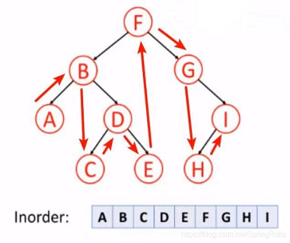
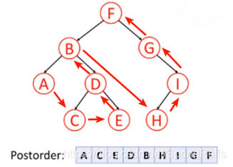
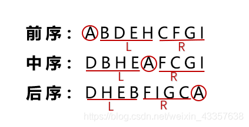

Tree basic
图论中的树和现实生活中的树长得一样，只不过我们习惯于处理问题的时候把树根放到上方来考虑。这种数据结构看起来像是一个倒挂的树，因此得名。
一个没有固定根结点的树称为 无根树（unrooted tree）。无根树有几种等价的形式化定义：
-
有 n 个结点，n-1 条边的连通无向图
-
无向无环的连通图
-
任意两个结点之间有且仅有一条简单路径的无向图
-
任何边均为桥的连通图
-
没有圈，且在任意不同两点间添加一条边之后所得图含唯一的一个圈的图
在无根树的基础上，指定一个结点称为 根，则形成一棵 有根树（rooted tree）。有根树在很多时候仍以无向图表示，只是规定了结点之间的上下级关系，详见下文。
有关树的定义¶
适用于无根树和有根树¶
-
森林（forest）：每个连通分量（连通块）都是树的图。按照定义，一棵树也是森林。
-
生成树（spanning tree）：一个连通无向图的生成子图，同时要求是树。也即在图的边集中选择 n - 1 条，将所有顶点连通。
-
无根树的叶结点（leaf node）：度数不超过 1 的结点。
为什么不是度数恰为 1 ？
考虑 n = 1。
- 有根树的叶结点（leaf node）：没有子结点的结点。
只适用于有根树¶
-
父亲（parent node）：对于除根以外的每个结点，定义为从该结点到根路径上的第二个结点。 根结点没有父结点。
-
祖先（ancestor）：一个结点到根结点的路径上，除了它本身外的结点。 根结点的祖先集合为空。
-
子结点（child node）：如果 u 是 v 的父亲，那么 v 是 u 的子结点。
子结点的顺序一般不加以区分，二叉树是一个例外。 -
结点的深度（depth）：到根结点的路径上的边数。
-
树的高度（height）：所有结点的深度的最大值。
-
兄弟（sibling）：同一个父亲的多个子结点互为兄弟。
-
后代（descendant）：子结点和子结点的后代。
或者理解成：如果 u 是 v 的祖先，那么 v 是 u 的后代。

- 子树（subtree）：删掉与父亲相连的边后，该结点所在的子图。

特殊的树¶
-
链（chain/path graph）：满足与任一结点相连的边不超过 2 条的树称为链。
-
菊花/星星（star）：满足存在 u 使得所有除 u 以外结点均与 u 相连的树称为菊花。
-
有根二叉树（rooted binary tree）：每个结点最多只有两个儿子（子结点）的有根树称为二叉树。常常对两个子结点的顺序加以区分，分别称之为左子结点和右子结点。
大多数情况下，二叉树 一词均指有根二叉树。 -
完整二叉树（full/proper binary tree）：每个结点的子结点数量均为 0 或者 2 的二叉树。换言之，每个结点或者是树叶，或者左右子树均非空。

- 完全二叉树（complete binary tree）：只有最下面两层结点的度数可以小于 2，且最下面一层的结点都集中在该层最左边的连续位置上。

- 完美二叉树（perfect binary tree）：所有叶结点的深度均相同的二叉树称为完美二叉树。

Warning
Proper binary tree 的汉译名称不固定，且完全二叉树和满二叉树的定义在不同教材中定义不同，遇到的时候需根据上下文加以判断。
OIers 所说的“满二叉树”多指完美二叉树。
存储¶
只记录父结点¶
用一个数组 parent[N] 记录每个结点的父亲结点。
这种方式可以获得的信息较少，不便于进行自顶向下的遍历。常用于自底向上的递推问题中。
邻接表¶
- 对于无根树：为每个结点开辟一个线性列表，记录所有与之相连的结点。
1std::vector<int> adj[N]; - 对于有根树：
- 方法一：若给定的是无向图，则仍可以上述形式存储。下文将介绍如何区分结点的上下关系。
- 方法二：若输入数据能够确保结点的上下关系，则可以利用这个信息。为每个结点开辟一个线性列表，记录其所有子结点；若有需要，还可在另一个数组中记录其父结点。
当然也可以用其他方式（如链表）替代
1 2
std::vector<int> children[N]; int parent[N];std::vector。
左孩子右兄弟表示法¶
对于有根树，存在一种简单的表示方法。
首先，给每个结点的所有子结点任意确定一个顺序。
此后为每个结点记录两个值：其 第一个子结点 child[u] 和其 下一个兄弟结点 sib[u]。若没有子结点，则 child[u] 为空；若该结点是其父结点的最后一个子结点，则 sib[u] 为空。
遍历一个结点的所有子结点可由如下方式实现。
1 2 3 4 5 6 7 | |
也可简写为以下形式。
1 2 3 4 5 | |
二叉树¶
需要记录每个结点的左右子结点。
1 2 3 4 | |
树的遍历¶
树上 DFS¶
在树上 DFS 是这样的一个过程：先访问根节点，然后分别访问根节点每个儿子的子树。
可以用来求出每个节点的深度、父亲等信息。
二叉树上 DFS¶
先序遍历¶

按照 根，左，右 的顺序遍历二叉树。
1 2 3 4 5 6 7 | |
中序遍历¶

按照 左，根，右 的顺序遍历二叉树。
1 2 3 4 5 6 7 | |
后序遍历¶

按照 左，右，根 的顺序遍历二叉树。
1 2 3 4 5 6 7 | |
反推¶
已知中序遍历序列和另外一个序列可以求第三个序列。

- 前序的第一个是 root，后序的最后一个是 root。
- 先确定根节点，然后根据中序遍历，在根左边的为左子树，根右边的为右子树。
- 对于每一个子树可以看成一个全新的树，仍然遵循上面的规律。
树上 BFS¶
从树根开始，严格按照层次来访问节点。
BFS 过程中也可以顺便求出各个节点的深度和父亲节点。
无根树¶
树的遍历一般为深度优先遍历，这个过程中最需要注意的是避免重复访问结点。
由于树是无环图，因此只需记录当前结点是由哪个结点访问而来，此后进入除该结点外的所有相邻结点，即可避免重复访问。
1 2 3 4 5 6 7 8 9 10 11 12 13 | |
有根树¶
对于有根树，需要区分结点的上下关系。
考察上面的遍历过程，若从根开始遍历，则访问到一个结点时 from 的值，就是其父结点的编号。
通过这个方式，可以对于无向的输入求出所有结点的父结点，以及子结点列表。
本页面部分内容引用自博文 二叉树：前序遍历、中序遍历、后续遍历，遵循 CC 4.0 BY-SA 版权协议。
build本页面最近更新：，更新历史
edit发现错误？想一起完善？ 在 GitHub 上编辑此页！
people本页面贡献者：OI-wiki
copyright本页面的全部内容在 CC BY-SA 4.0 和 SATA 协议之条款下提供，附加条款亦可能应用